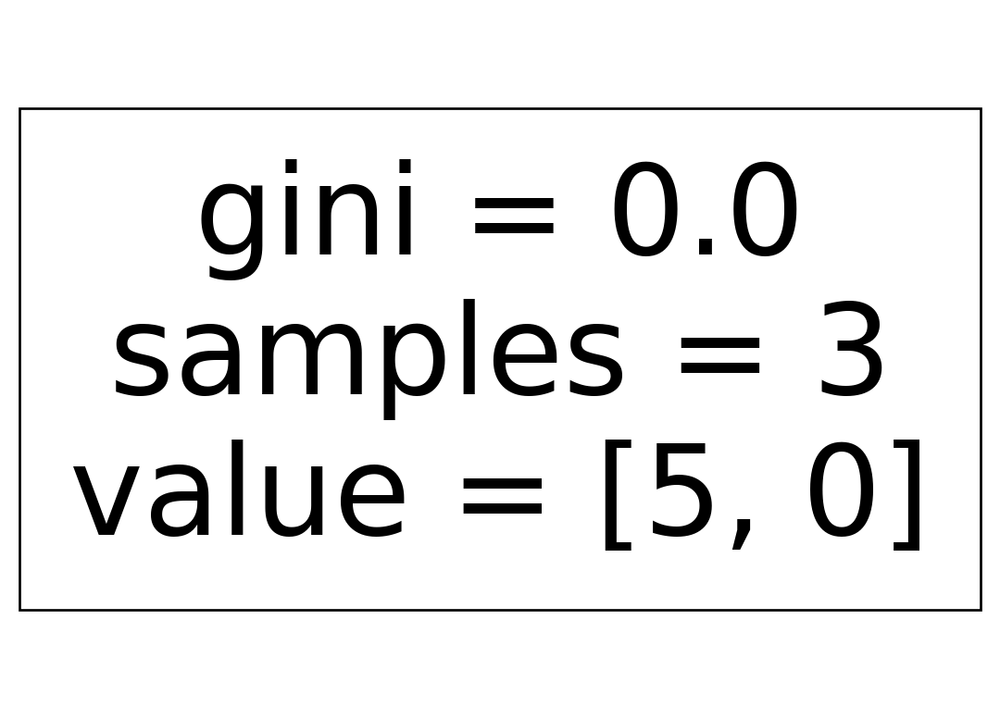

import pandas as pd
import numpy as np
import matplotlib.pyplot as plt
from sklearn.ensemble import RandomForestClassifier, GradientBoostingRegressor, GradientBoostingClassifier
from sklearn.tree import plot_tree
from sklearn.preprocessing import LabelBinarizer, OneHotEncoder
from sklearn.metrics import accuracy_score, confusion_matrix, roc_auc_score10 Ensemble
10.1 Example 10.2 - 10.3
10.1.1 Load data
dat = pd.read_csv("data/ch10_dat1.csv")
X = OneHotEncoder().fit_transform(dat[['X1', 'X2', 'X3', 'X4']])
enc = LabelBinarizer().fit(dat['Y'])
y = enc.transform(dat['Y']).ravel()10.1.2 Ex 10.2: Train random forest classifier
rf = RandomForestClassifier(n_estimators=4, oob_score=True, random_state=3280612)
rf.fit(X, y)RandomForestClassifier(n_estimators=4, oob_score=True, random_state=3280612)In a Jupyter environment, please rerun this cell to show the HTML representation or trust the notebook.
On GitHub, the HTML representation is unable to render, please try loading this page with nbviewer.org.
RandomForestClassifier(n_estimators=4, oob_score=True, random_state=3280612)
Visualize each tree in the random forest.
for m in rf.estimators_:
plot_tree(m)
plt.show()
10.1.3 Ex 10.3: OOB prediction
Out-of-bag probability prediction:
rf.oob_decision_function_array([[1. , 0. ],
[0. , 1. ],
[0. , 1. ],
[0.75, 0.25],
[0. , 1. ]])y_oob = np.argmax(rf.oob_decision_function_, axis = 1)
y_oobarray([0, 1, 1, 0, 1])Confusion matrix on OOB prediction:
confusion_matrix(y, y_oob)array([[0, 3],
[2, 0]])10.2 Example 10.5
10.2.1 Load data
dat = pd.read_csv("data/ch10_dat3.csv")
X = dat[['X']]
y = dat['Y']10.2.2 Estimate GBM
gbm_model = GradientBoostingRegressor(n_estimators=5, max_depth=1, learning_rate=1)gbm_model.fit(X, y)GradientBoostingRegressor(learning_rate=1, max_depth=1, n_estimators=5)In a Jupyter environment, please rerun this cell to show the HTML representation or trust the notebook.
On GitHub, the HTML representation is unable to render, please try loading this page with nbviewer.org.
GradientBoostingRegressor(learning_rate=1, max_depth=1, n_estimators=5)
10.2.3 Visualize function
X_new = pd.DataFrame.from_dict({'X': np.arange(start=-5, stop=5, step=0.01)})
y_pred = gbm_model.predict(X_new)plt.figure()
plt.scatter(X, y)
plt.plot(X_new, y_pred, color='orange')
plt.show()10.3 Example 10.6
10.3.1 Load data
dat = pd.read_csv("data/ch8_dat1.csv")
X = dat[['x1', 'x2']]
y = LabelBinarizer().fit_transform(dat['class']).ravel()10.3.2 Small GBM Classifier
Let us use only two trees (i.e. n_estimator = 2)
gbm_model = GradientBoostingClassifier(n_estimators=2, max_depth=1, learning_rate=1)
gbm_model.fit(X, y)GradientBoostingClassifier(learning_rate=1, max_depth=1, n_estimators=2)In a Jupyter environment, please rerun this cell to show the HTML representation or trust the notebook.
On GitHub, the HTML representation is unable to render, please try loading this page with nbviewer.org.
GradientBoostingClassifier(learning_rate=1, max_depth=1, n_estimators=2)
10.3.3 Prediction
Posterior:
y_posterior = gbm_model.predict_proba(X)
y_posteriorarray([[0.92409102, 0.07590898],
[0.84891394, 0.15108606],
[0.24397021, 0.75602979],
[0.24397021, 0.75602979],
[0.24397021, 0.75602979],
[0.84891394, 0.15108606],
[0.84891394, 0.15108606],
[0.24397021, 0.75602979],
[0.24397021, 0.75602979],
[0.24397021, 0.75602979]])Area under the ROC curve:
roc_auc_score(y, y_posterior[:, 1])np.float64(0.9)10.3.4 Larger model
Let us increase number of trees, while reducing step size:
gbm_model = GradientBoostingClassifier(n_estimators=100, max_depth=1, learning_rate=0.1)
gbm_model.fit(X, y)GradientBoostingClassifier(max_depth=1)In a Jupyter environment, please rerun this cell to show the HTML representation or trust the notebook.
On GitHub, the HTML representation is unable to render, please try loading this page with nbviewer.org.
GradientBoostingClassifier(max_depth=1)
Posterior:
y_posterior = gbm_model.predict_proba(X)
y_posteriorarray([[0.90889146, 0.09110854],
[0.98989577, 0.01010423],
[0.76814463, 0.23185537],
[0.11838389, 0.88161611],
[0.08298002, 0.91701998],
[0.98989577, 0.01010423],
[0.89455077, 0.10544923],
[0.22292706, 0.77707294],
[0.0114939 , 0.9885061 ],
[0.0114939 , 0.9885061 ]])AUC:
roc_auc_score(y, y_posterior[:, 1])np.float64(1.0)